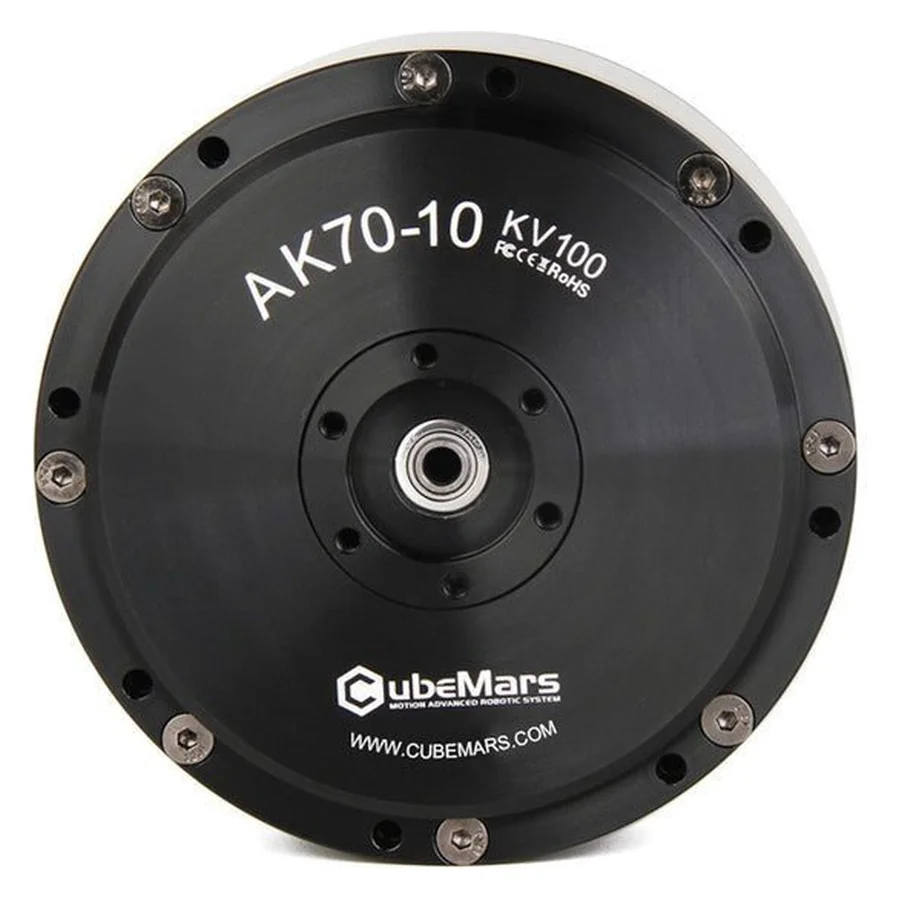

AK Series. 8.3 N·m rated, 24.8 N·m peak, Ф89 mm, 621 g, 10:1 reduction, 24 V.
US$559.00
8.3 N·m rated and 24.8 N·m peak from a Ф89 x 50.25 mm, 621 g frame, geared 10:1, on 24 V. Kv 100, 148 RPM rated. CubeMars lists it for legged robots, exoskeletons and AGVs.
This is the with driver configuration.
The AK70-10 actuator integrates a high-performance brushless DC motor, a self-developed planetary reducer, an encoder, and an integrated drive, enabling smooth operation with high torque.
| Reduction Ratio | 10:1 |
|---|---|
| Rated Torque (N·m) | 8.3 |
| OD (mm) | 89 |
| Weight (g) | 621 |
| Peak Torque (N·m) | 24.8 |
| Motor Constant Km (N·m/√W) | 0.24 |
| Rated Voltage (V) | 24/48 |
| Rated Speed (RPM) | 148/310 |
| Rated Current (A) | 7.2 |
| Peak Current (A) | 23.2 |
| Maximum Torque Weight Ratio (N·m/kg) | 47.6 |
| Height (mm) | 50.25 |
| Back Drive (N·m) | 0.48 |
| Kv (RPM/V) | 100 |
| Kt (N·m/A) | 0.123 |
| Ke (V/kRPM) | 11.2 |
| Phase to Phase Resistance (mΩ) | 272 |
| Phase to Phase Inductance (μH) | 113 |
| Inertia (g·cm²) | 414 |
| Mechanical Time Constant (ms) | 0.74 |
| Electrical Time Constant (ms) | 0.42 |
| Pole Pairs | 21 |
| Winding Type | Delta Backlash (°) 0.12 |
| Number of Encoder | 1 |
| Inner Loop Encoder Type | Magnetic Encoder |
| Inner Ring Encoder Resolution | 14bit |
| CAN Connector | A1257WR-S-4P |
| UART Connector | A1257WR-S-4P |
| Power Connector | XT30PW-M |
| Temperature Sensor | NTC MF51B 103F3950 |
| Operation Ambient Temperature | -20℃~50℃ |
| Driving Way | FOC |
| Application | Legged Robot, Exoskeleton, AGV |